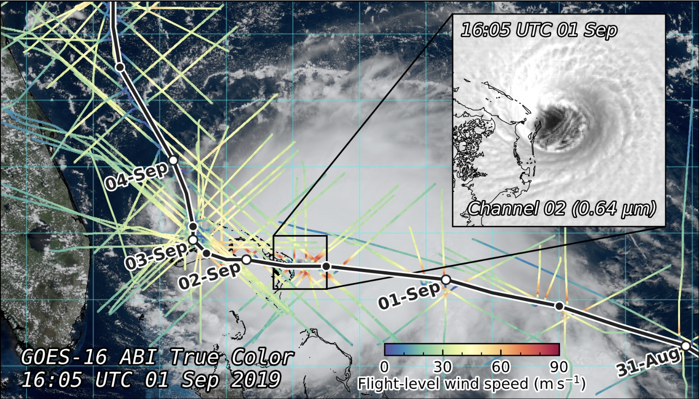
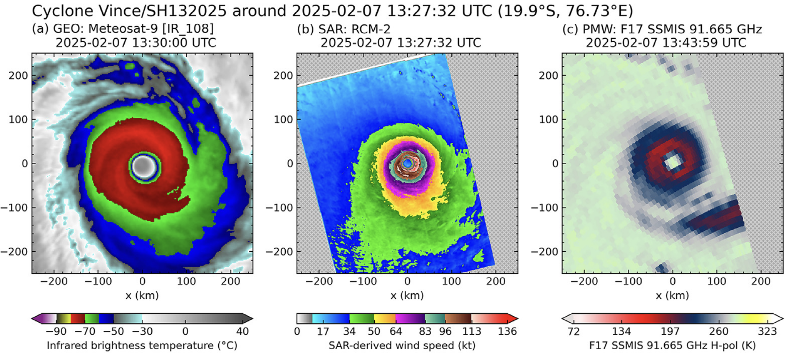
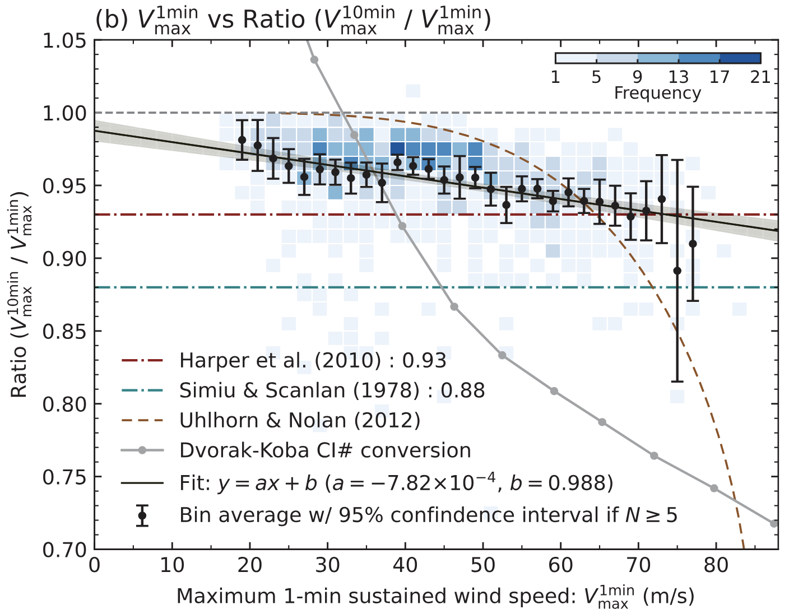
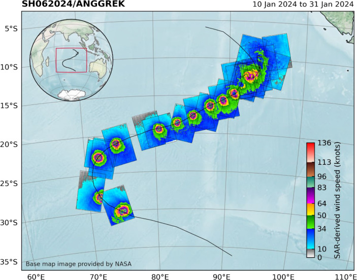
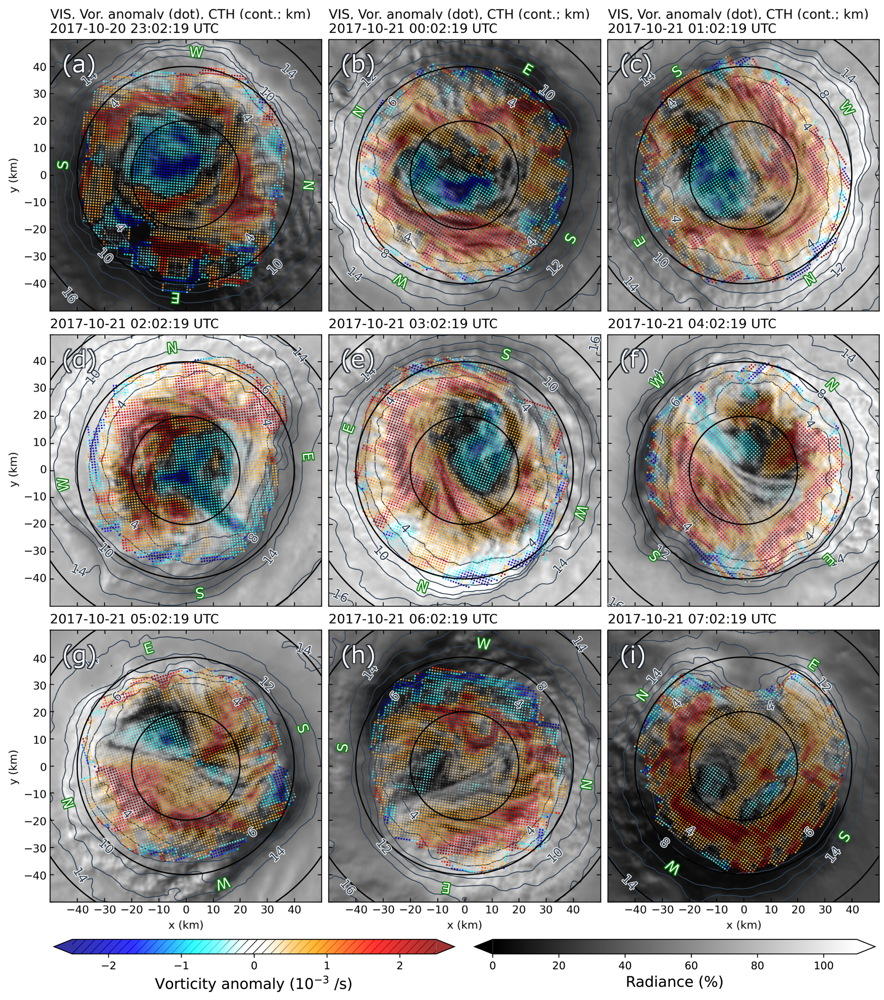
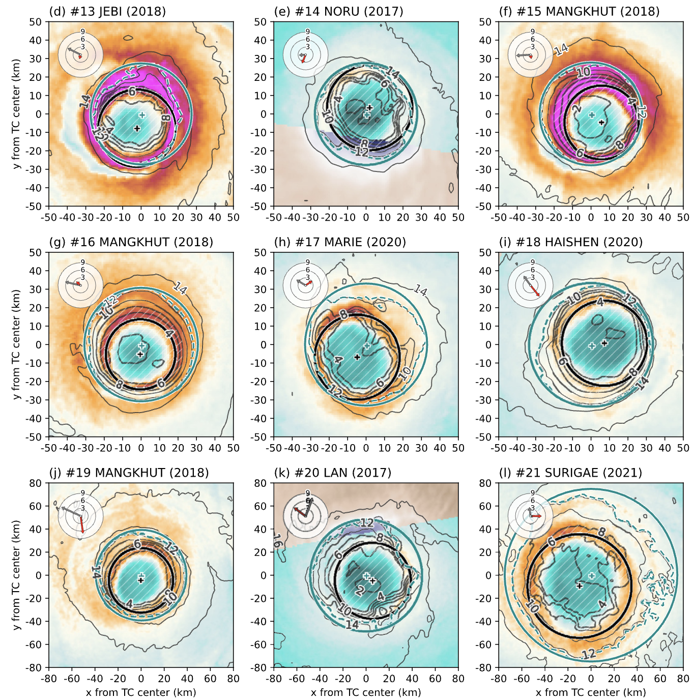
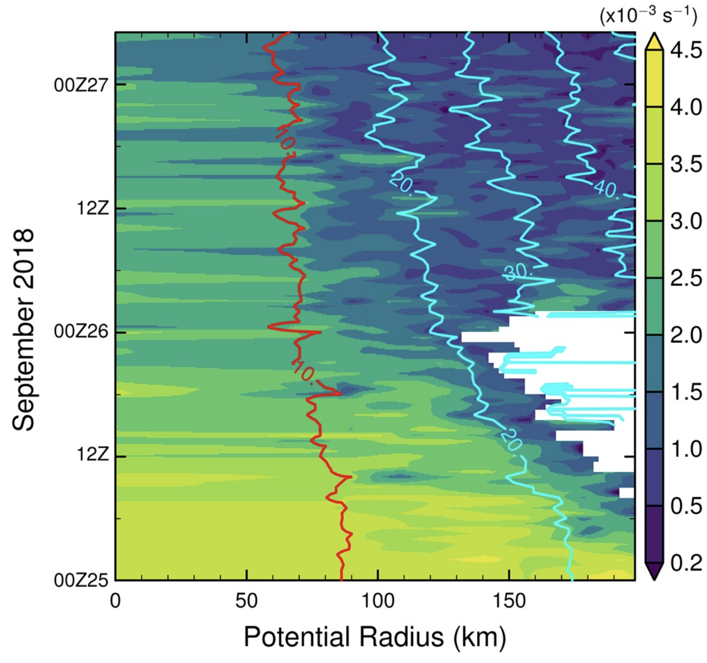
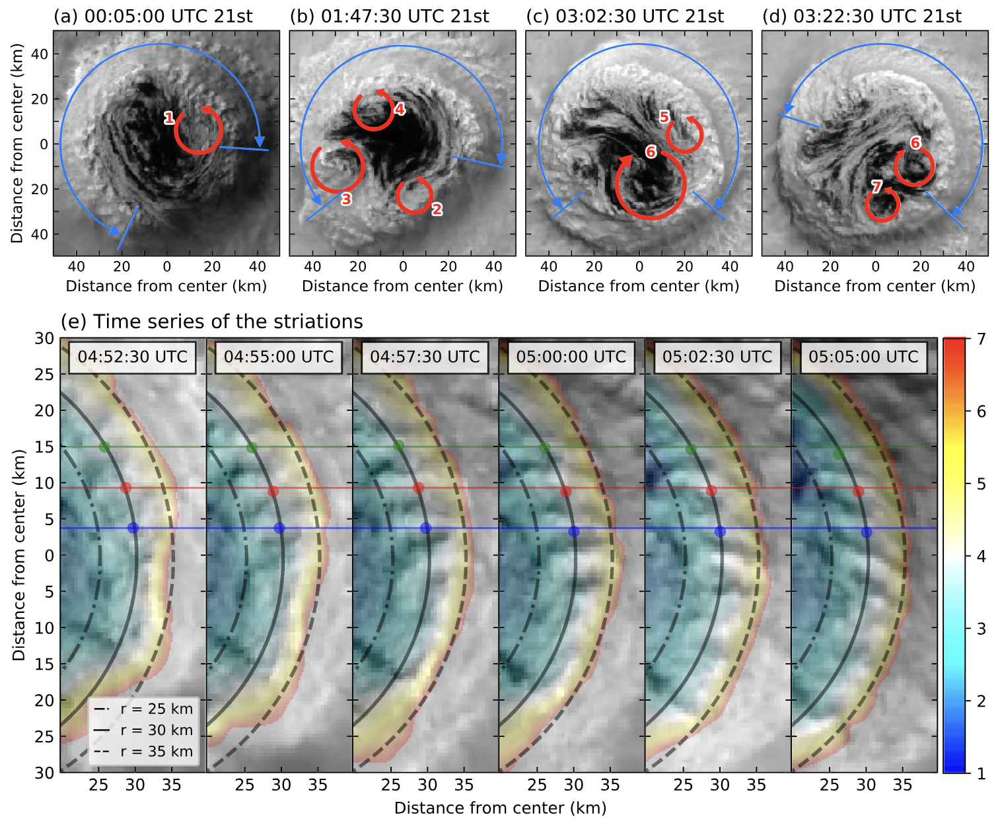

Research
Research Topics
My research focuses on tropical cyclone inner-core structure and dynamics using satellite observations (Himawari, SAR, etc.).

2026 JGR: AtmospheresLightning Outbreaks at the Mature Stage of Tropical Cyclone: Case Study for Hurricane Dorian (2019)
Journal of Geophysical Research: Atmospheres, 131, e2025JD046243

2026 Remote Sensing of EnvironmentFostering Tropical Cyclone Research and Applications with Synthetic Aperture Radar
Remote Sensing of Environment, 333, 115139

2025 Weather and ForecastingGuidance for Estimating Mean Winds in Tropical Cyclones Using SAR-Derived Winds
Weather and Forecasting, 40, 2699–2716

2025 J. European Meteorological SocietyRecent Innovations in Satellite-Based Applications and Their Impacts on Tropical Cyclone Analyses and Forecasts
Journal of the European Meteorological Society, 2, 100011

2024 JGR: AtmospheresWind Distribution in the Eye of Tropical Cyclone Revealed by a Novel Atmospheric Motion Vector Derivation
Journal of Geophysical Research: Atmospheres, 129, e2023JD040585

2023 Monthly Weather ReviewStrong Relationship between Eye Radius and Radius of Maximum Wind of Tropical Cyclones
Monthly Weather Review, 151(2), 569–588

2021 JGR: AtmospheresInner-Core Wind Field in a Concentric Eyewall Replacement of Typhoon Trami (2018)
Journal of Geophysical Research: Atmospheres, 126, e2020JD034434

2020 Geophysical Research LettersEstimation of the Tangential Winds and Asymmetric Structures in Typhoon Inner Core Region Using Himawari-8
Geophysical Research Letters, 47, e2020GL087637